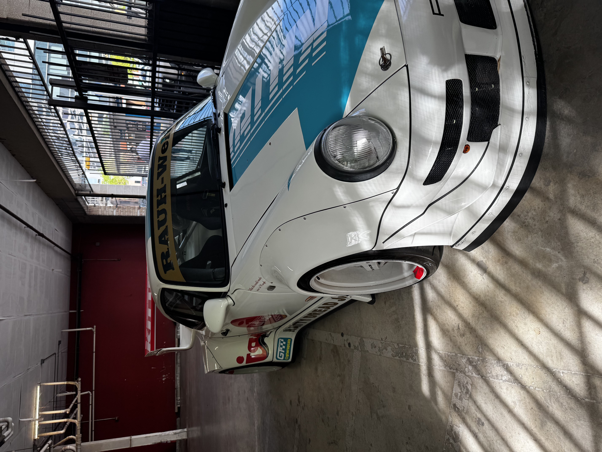

My name is Enrique Sanchez
My expected gradation date is May 2029 in the spring
I am hoping to land any job, but i am most intrested in the cyber security field.
I am really interested in understanding computers in a deeper level, why specific and detailed reasons happen in our daily lives because technology plays such a huge role in them. I want to understand how computers work and how to protect them from cyber attacks.
I am also interested in learning about programming and how to create software that can help people in their daily lives. Overall, I want to gain a comprehensive understanding of technology and its impact on society.
A site that explains a little about cyber security
some relevant skills and course work im taking
- currently taking Component based programing to help me understand in a deeper level how certain mechinas work inside of java programing lanauage
- currently taking Computer networking to help me understand how computers communicate with each other and how to protect them from cyber attacks.
- a revelant skill i have, is my time at samsung as a intern learning to how to work in the FAB, fixing machines and reading SOP
i enjoy hiking on my free time

I enjoy car spotting as well